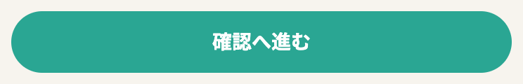
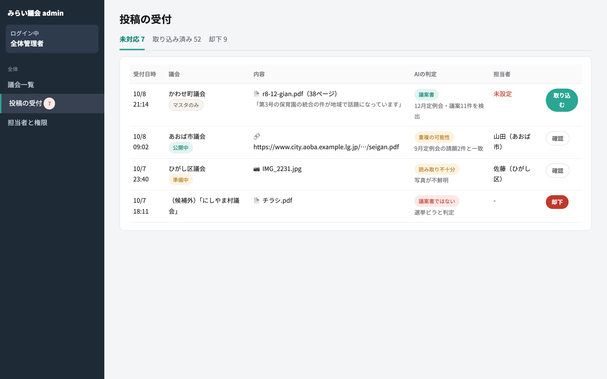
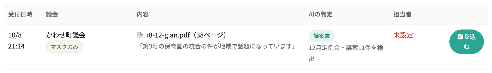

地方版みらい議会 使い方ガイド
地方版みらい議会は、都道府県議会・市区町村議会の議案をわかりやすく解説し、住民の声を議会に届けるサービスです。 自治体ごとに別のサイトを作るのではなく、議案書を登録すれば、その議会のページが自動でできあがります。 このガイドでは、見る人・投稿する人・運営する人それぞれの使い方を説明します。
1. 全体の流れ
議案書が登録されてから、住民の声が議員に届くまでの大きな流れです。 担当者が要約を一から書く必要はありません。AIが下書きを作り、人はそれを確認します。


2. 議案を見る・意見を伝える（住民）


3. 議案書を投稿する（住民）
自分のまちの議会が載っていない、または議案が足りないときに使います。 要約を書く必要はありません。議案書を渡すだけで、解説はAIと担当者が作ります。
議案書はどこにある？
議会の公式サイトの「本会議の日程」「提出議案」「議案書」などのページに、PDFで掲載されていることが多いです。 紙で配られている場合は、写真でも受け付けます。

4. 議案を登録して公開する（担当者）
担当者のいちばん大事な作業です。1会期分の議案書をまとめてアップロードすれば、議案ごとの登録はAIが行います。


例: 人権擁護委員の推薦、市道の路線認定 など

表示タイトル・解説（ふつう／くわしく）・AIチャットの参照資料

確認のチェックポイント
- 金額・人数・日付・施行日が原文と一致しているか
- 「誰に」「何が」「いつから」変わるのかが書かれているか
- 賛成・反対どちらかに寄った書き方になっていないか（解説は中立に。意見は賛否の欄に書く）
- 専門用語が「ふつう」の解説に残っていないか
5. 投稿を取り込む（担当者・運営）
担当者探しも検討（→ 7章）

PDFと会期が入った状態で A3 が開く → 4章の流れへ

重複なら既存の議案に統合、不鮮明なら議会サイトから取り直す、無関係なら「却下」
6. 会期末の作業（担当者）
地方議会では、議案の採決は会期の最終日の本会議でまとめて行われることがほとんどです。

継続審査になった議案は、次の定例会の一覧にも引き継いで表示します。
7. 新しい議会を立ち上げる（運営）
全国の議会はあらかじめ「マスタのみ」の状態で登録されています。担当者が見つかった議会から順に立ち上げます。


8. 状態の移り変わり
議会
議案の解説
議案の審議
投稿
9. よくある質問
Q. AIの下書きはそのまま公開されますか？
されません。公開できるのは確認者だけで、公開ページには「AIが下書きし、担当者が確認した」ことと確認日を表示します。
Q. チームみらいの議員がいない議会でも使えますか？
使えます。その場合、議案ページに「チームみらいの賛否」の欄は出ません。 意見の届け先がない議会では、インタビューを出さずにAIチャットだけにすることもできます。
Q. 議案書がPDFではなく、議会サイトのページに直接書かれています
そのページのURLを投稿・登録してください。AIがページの内容を読み取ります。
Q. 議案が多すぎて全部は確認しきれません
予算や条例など、生活に影響の大きい議案から公開してください。 人事案件などは登録時にチェックを外して、解説を作らないこともできます。
Q. 解説に間違いを見つけました
担当者は公開後も編集できます。修正すると、公開ページの確認日が更新されます。